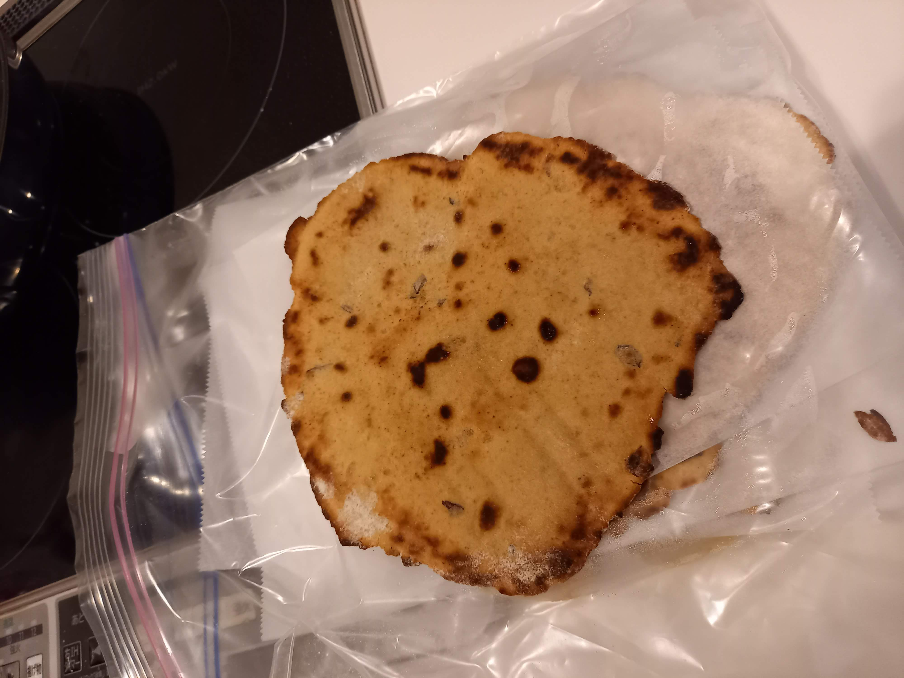

Sweet Potato Flatbread

Description
Flatbread made with a base of sweet potatoes and flour. Can be made in batches and then stored in the freezer. Pull it straight from the freezer and throw it into an oven or frying pan to heat up and use right away.
Ingredients:
- 1 big sweet potato or two small ones
- 1 1/2 - 2 cups of flour
- 1 teaspoon baking soda
- 1/2 teaspoon salt
- (optional) spices for flavoring (garlic powder, cumin, sazon, etc...)
- (optional) 1 teaspoon psyllium husk powder
- almond milk or other liquid
- olive oil
Steps:
- Steam sweet potato(es) until soft. In the meantime, sift flour and incorporate baking soda, salt, spices, and psyllium husk.
- When potatoes are done, transfer to a bowl and mash them while slowly adding almond milk until smooth.
- Slowly mix in flour (but save about a half cup) and knead dough in bowl. Add more almond milk if dough is too dry. Add about 1/2 tablespoon of olive oil. Add more flour if it is too sticky. Knead until smooth.
- Let dough rest for about 10 minutes. Prepare your work area. Spread flour on a clean surface and on rolling pin. Heat a frying pan to medium-low heat and spray some olive oil in it.
- Break off a piece of dough, about the size of a mikan. Roll it up and flatten it a bit with your hands, then place on surface over flour and roll flat with the rolling pin.
- Put the flattened dough in the frying pan, heat each side for about 3 minutes. While it's heating prep your next one.
- If freezing, prepare a freezer bag and sheets of wax paper. As the bread is done frying, remove from frying pan and place in the freezer bag in between the wax paper.
- When done, place freezer bag in freezer and then clean up your mess.
Go back